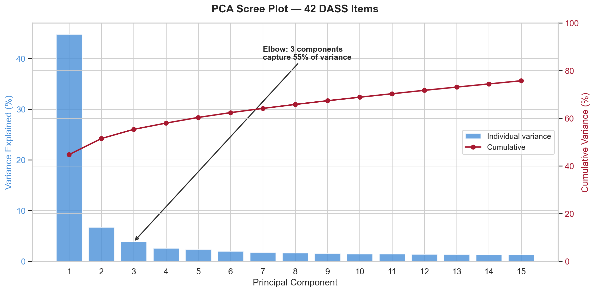
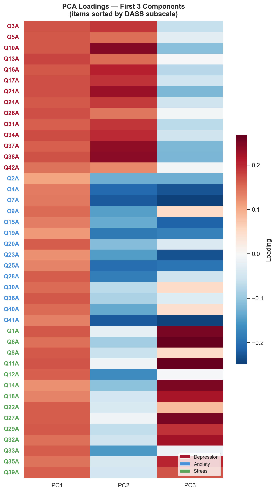
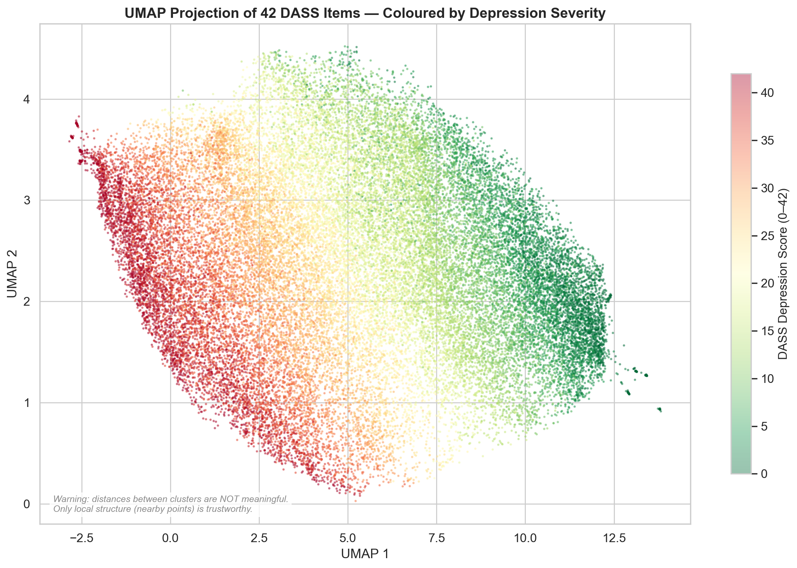
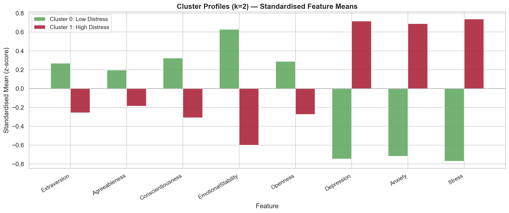
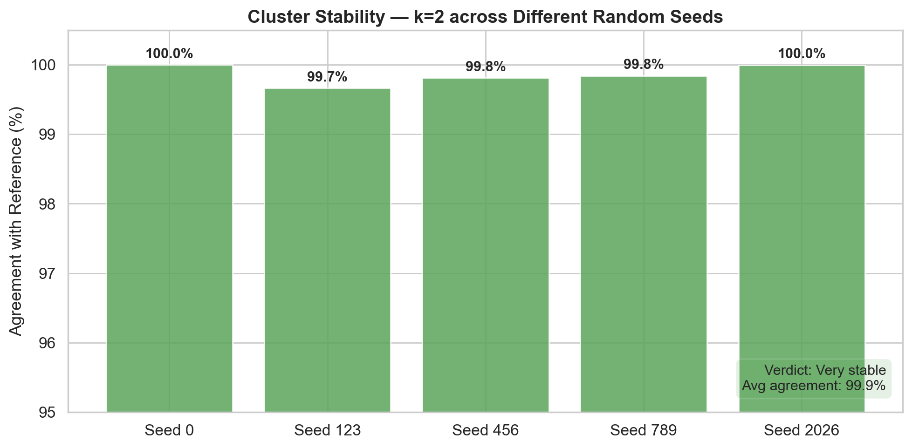

PSYC4411 Week 8 Challenge Lab
Example Group — Week 8

PC1 captures 44.8% of variance alone — a dominant general distress factor

Items sorted by subscale — PC2 separates Depression from Anxiety, PC3 captures Stress

Depression severity forms a gradient, not discrete clusters — consistent with dimensional models

k=2: Low distress (green) vs High distress (red) — differing on all features

99.9% average agreement across 5 random seeds — extremely stable
3 components explain 55.4% of variance. PC1 (44.8%) = general distress. PC2 (6.7%) separates Depression from Anxiety. PC3 (3.8%) captures Stress.
k=2 (silhouette = 0.240). Low distress (N=16,908, Dep=11.8) vs High distress (N=17,668, Dep=29.7). Silhouette drops to 0.150 at k=3 — no evidence for more than 2 groups.
99.9% average agreement across 5 random seeds. Fewer than 0.35% of participants changed cluster in any run. These clusters are real — but they may be splitting a continuum, not discovering types.
The AI wrote: “3 components explaining 56% of variance” — the actual value is 55.36%. It also omitted the careless responder filtering step. Small errors in methods sections can undermine credibility.
Distress is dimensional, not categorical. The strongest structure is a single severity gradient (PC1 = 45%). Clustering finds stable groups, but they’re cuts on a continuum — not distinct “types” of distress.